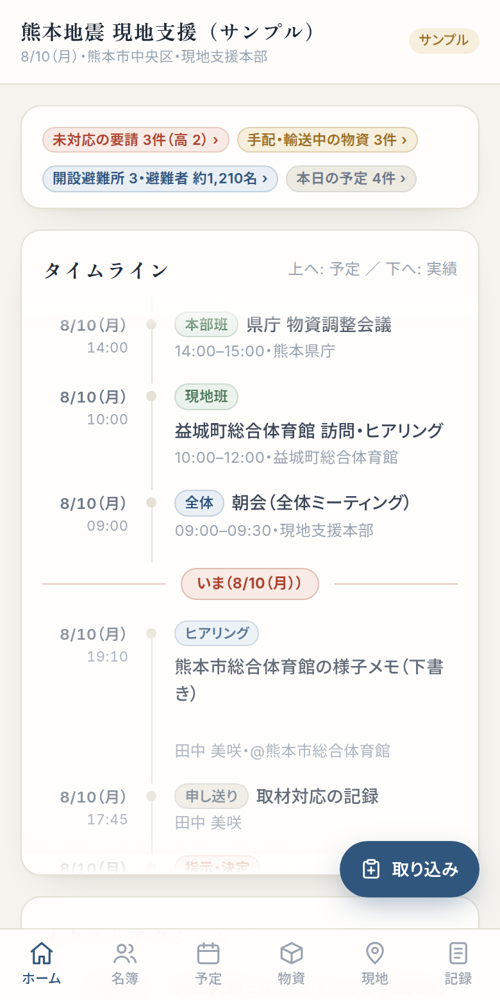
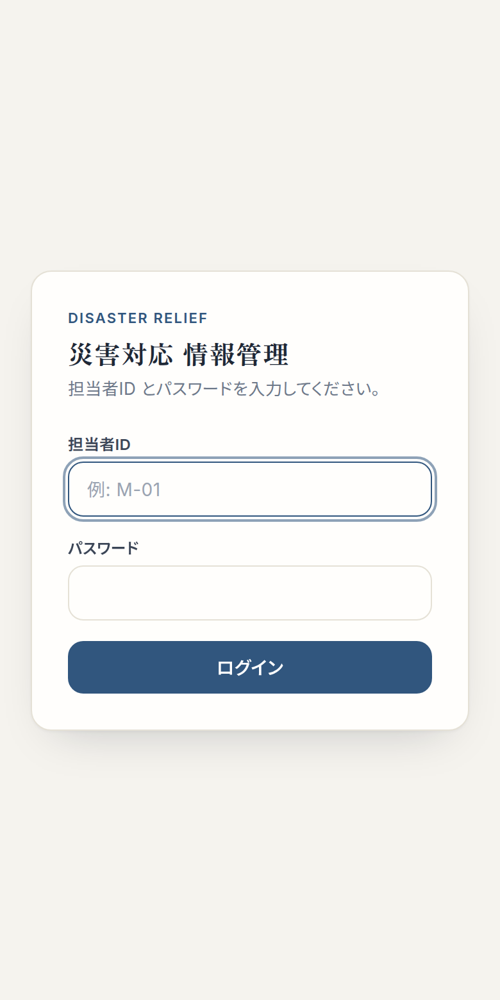
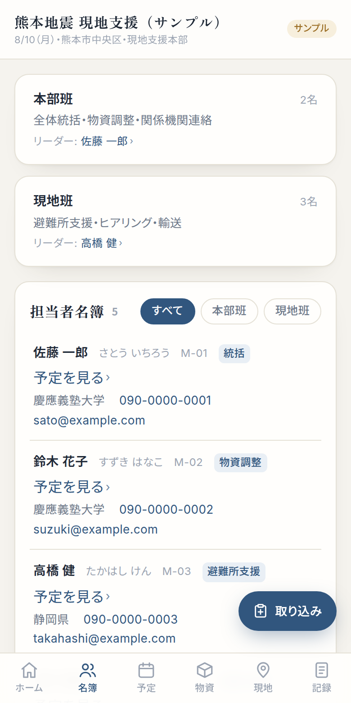
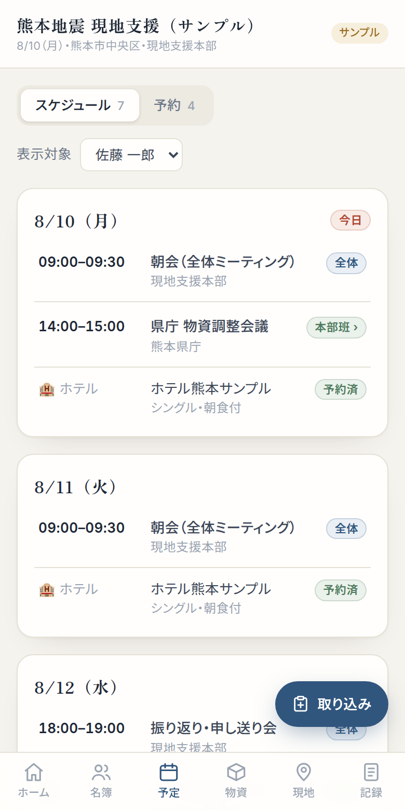
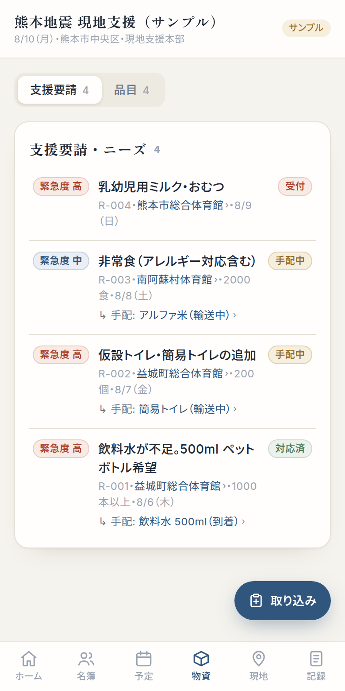
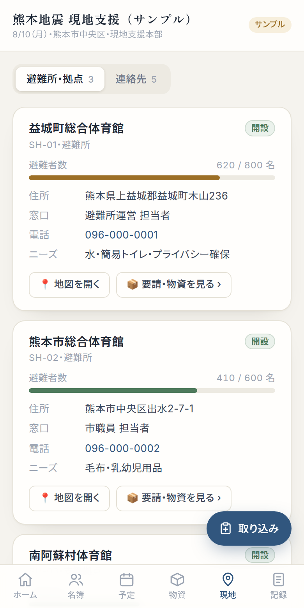
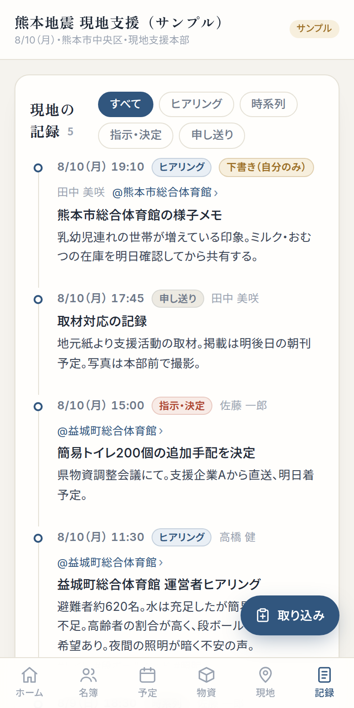
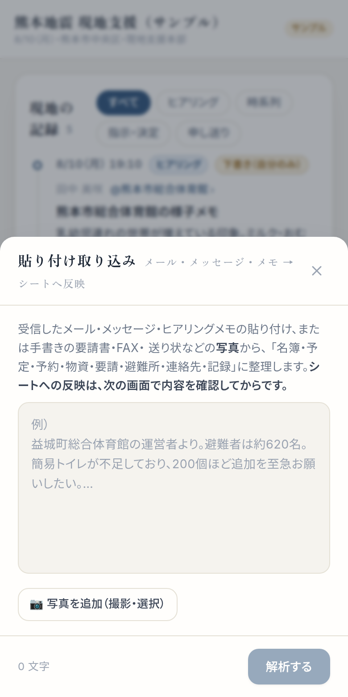

現地支援メンバー向け ── スマートフォンでの使い方

このマニュアルは配布時点の画面です。実際の表示と多少異なる場合があります。
災害対応の現地支援に必要な情報を、チーム全員でひとつの場所に集めて共有するアプリです。スマートフォンのブラウザで使えます（アプリのインストールは不要）。
| ホーム | いまの状況・タイムライン・次にやるべきことがひと目でわかる |
|---|---|
| 名簿 | メンバーの連絡先。タップで電話・メールを発信できる |
| 予定 | 全体・班・自分のスケジュールと、ホテル・移動の予約 |
| 物資 | 避難所からの支援要請と、支援品目（ロット）の発送・到着状況 |
| 現地 | 避難所・拠点の情報（地図リンク付き）と関係機関の連絡先 |
| 記録 | ヒアリング内容・決定事項・申し送りの時系列記録 |

未対応の要請 手配・輸送中の物資 開設避難所 などが1行で表示されます。タップすると該当ページに移動します。赤=至急対応、黄=進行中、緑=問題なし、の色分けです。
赤い「いま」の線を境に、上へスクロールするとこれからの予定、下へスクロールするとこれまでの実績（記録・物資の発送/到着・要請の受付）が時系列で見られます。行をタップすると詳細ページへ移動します。
「次にやるべきこと」が優先順に自動で並びます（未対応の要請 → 物資の到着確認 → 直近の予定 → 未共有の下書き）。こちらも行をタップで詳細へ。




現地で見聞きしたこと・決めたことを時系列で共有するページです。種別（ヒアリング／時系列／指示・決定／申し送り）で絞り込めます。
| 共有 | チーム全員が見られます（ふつうはこれ） |
|---|---|
| 下書き | 自分だけが見られます。内容を確かめてから「全体に共有する」ボタンで公開できます |
| プライベート | 自分だけのメモ。他の人には一切表示されません |
下書き・プライベートは、他のメンバーの画面にはデータ自体が送られないので、安心してメモに使えます。

このアプリへの入力は、画面右下の「取り込み」ボタンからが基本です。手入力のフォームはありません。メールやメモを貼り付けるか、写真を撮るだけで、AIが内容を読み取って整理します。

| 画面が表示されない・古い | 電波の良い場所で、ページを下に引っぱって再読み込みしてください。それでも直らない場合はブラウザを一度閉じて開き直します。 |
|---|---|
| ログインできない | 担当者IDは「M-01」のような形式です。大文字・小文字やハイフンを確かめてください。パスワードを忘れた場合は本部の管理担当者へ。 |
| 間違えて保存してしまった | アプリからは削除できません。本部の管理担当者に連絡してください（元データを直接修正します）。 |
| 取り込みの解析が失敗する | 文章が長すぎる場合は分けて貼り付けてください。写真はピントと明るさを確認して撮り直すと読み取りやすくなります。 |
| データが増えて見つけにくい | ホームの状況チップ・タイムライン・ネクストアクションから、青い「›」リンクをたどるのが近道です。 |